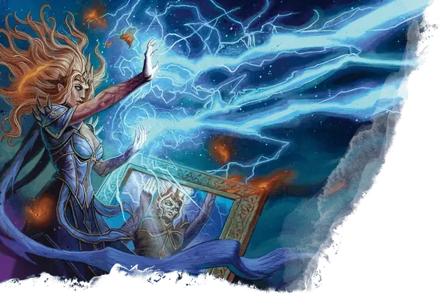

Валиндра Теневая Мантия
Valindra Shadowmantle
Средняя Нежить (Волшебник), Нейтральная Злая, именной НИП

Класс Защиты 20 Инициатива +17 (27)
Хиты 315 (42к8 + 126)
Скорость 30 футов
| мод | спас | ||
|---|---|---|---|
| СИЛ | 11 | +0 | +0 |
| ЛОВ | 16 | +3 | +10 |
| ТЕЛ | 16 | +3 | +10 |
| мод | спас | ||
|---|---|---|---|
| ИНТ | 21 | +5 | +12 |
| МДР | 14 | +2 | +9 |
| ХАР | 16 | +3 | +3 |
Сопротивление урону Холод, Электричество
Иммунитеты Некротический, Яд; Испуганный, Истощение, Отравленный, Очарованный, Парализованный
Чувства пассивное Восприятие 19, Истинное зрение 120 футов
Языки Все
Опасность 21 (33 000 опыта; БВ +7)
Особенности
Легендарное сопротивление (4/день, или 5/день в логове). Если Валиндра проваливает спасбросок, она вместо этого может в нём преуспеть.
Камень души. Спустя 1к10 дней после уничтожения Валиндра заново возрождается со всеми Хитами, если её камень души цел. Её новое тело появляется в незанятом пространстве в её логове.
Действия
Мультиатака. Валиндра совершает три атаки Потусторонней вспышкой или Парализующим касанием в любой комбинации. Она может заменить две атаки одним использованием Сотворения заклинаний (Молния, версия 5-го уровня).
Потусторонняя вспышка. Бросок рукопашной или дальнобойной атаки: +12, досягаемость 5 фт. или дистанция 120 фт. Попадание: 31 (4к12 + 5) Силового урона.
Парализующее касание. Бросок рукопашной атаки: +12, досягаемость 5 фт. Попадание: 14 (2к8 + 5) урона Холодом, и цель Парализована до начала следующего хода Валиндры.
Хватка смерти (Перезарядка 5–6). Спасбросок Ловкости: Сл 20, каждое существо в 30-футовой Эманации, исходящей от Валиндры. Первый провал: 39 (6к12) Силового урона, и цель Опутана и повторяет бросок в конце каждого своего хода, при успехе оканчивая на себе этот эффект. Спустя 1 минуту она автоматически преуспевает в спасброске. Последующие провалы: 39 (6к12) Некротического урона, и Валиндра получает 20 Временных хитов.
Сотворение заклинаний. Валиндра Теневая Мантия сотворяет одно из следующих заклинаний (заклинательная характеристика — Интеллект, Сл спасброска заклинаний 20):
Неограниченно: Волшебная рука, Молния, версия 5-го уровня, Невидимость, Обнаружение магии, Обнаружение мыслей, Полёт, Рассеивание магии, Фокусы
2/день каждое: Планарный переход, Поднятие мертвеца
1/день каждое: Конус холода, версия 8-го уровня, Наблюдение, Перст смерти, Слово силы: смерть
Бонусные действия
Иллюзорная маскировка. Валиндра сотворяет Маскировку (заклинательная характеристика — та же, что для Сотворения заклинаний). Заклинание длится до тех пор, пока Хиты Валиндры не опустятся до 30 или ниже или Валиндра не использует своё легендарное действие Душераздирающий взгляд. Проверки Интеллекта (Расследование) для разоблачения этой маскировки совершаются с Помехой.
Реакции
Защитная магия. Валиндра сотворяет Контрзаклинание или Щит в ответ на условие этого заклинания (заклинательная характеристика — та же, что для Сотворения заклинаний).
Легендарные действия
У этого существа есть 3 использования Легендарных действий (или 4 использования в его Логове); оно может немедленно после окончания хода другого существа потратить одно использование, чтобы совершить одно из следующих действий. Существо восполняет все потраченные использования в начале каждого своего хода.
Разрушение жизни. Спасбросок Телосложения: Сл 20, каждое существо, кроме Нежити, в 20-футовой Эманации, исходящей от Валиндры. Провал: 21 (6к6) Некротического урона. Успех: Только половина урона. Провал или успех: Валиндра не может совершить это действие повторно до начала своего следующего хода.
Потусторонний скачок. Валиндра совершает одну атаку Потусторонней вспышкой. До или после совершения этой атаки Валиндра может телепортироваться в видимое ей незанятое пространство на расстояние вплоть до 20 футов.
Душераздирающий взгляд. Спасбросок Мудрости: Сл 20, одно видимое Валиндрой существо в 30 футах. Провал: 22 (4к10) Некротического урона, и цель Испугана до конца своего следующего хода. Успех: Только половина урона.
Бонус мастерства +7
Валиндра Теневая Мантия
Хладнокровная и расчётливая волшебница-лич
Валиндра Теневая Мантия когда-то была себялюбивой и амбициозной эльфийской волшебницей, которая оставила свой народ в поисках тайной силы в большом мире. Валиндра без колебаний заключает союзы по расчёту — она работала и с Сзассом Тэмом и его Красными Волшебниками Тэя, и с Тайным Братством Лускана, и с культами дьяволопоклонников, и со многими другими.
Хотя черты Валиндры иссохши и бледны, как у других личей, она предпочитает скрываться за магической личиной той высокой эльфийки, какой она была при жизни. При этом ностальгия или сожаление тут ни при чём: Валиндра, вечная интриганка, использует эту маску лишь для того, чтобы скрывать силы, обретённые после превращения в Нежить.
История
Неизвестно, ушла Валиндра из родной эльфийской общины по собственной воле или была изгнана за жестокость. Так или иначе, она странствовала по побережью Мечей и по северным землям, учась у любых волшебников, готовых делиться знаниями с нетерпеливой и льстивой ученицей.
Своё мастерство Валиндра принесла в Арканное Братство Лускана, где удостоилась особого внимания его главы, Арклема Грита. Арклем и Валиндра были очень близки; когда их убили, они восстали личами вместе, и каждый заключил свою душу в особый камень.
С тех пор Валиндра оставила Арклема и Арканное Братство, служа сведущей соратницей культам, тайным обществам и преступным предприятиям. Свои услуги она предоставляет лишь за тщательно взвешенную цену — будь то тайные заклинания, могучие волшебные предметы или будущие одолжения.
Личность
Валиндра любит производить впечатление приятной, не в меру любопытной учёной. Она предпочитает действовать умом, а не грубой силой и ценит победы, в которых она переиграла врагов, а не сокрушила их заклинаниями. Если ей удаётся стравить противников между собой или завести их в безнадёжную засаду, она даже не раскроет истинный масштаб своих способностей. Порой Валиндра хладнокровно решает принять гибель, лишь бы не выдать своих тайн, — в полной уверенности, что камень души вернёт её к жизни.
Со многочисленными злыми организациями, которым она служила, Валиндра сохраняет приятельские отношения, чтобы в будущем легче было пользоваться их помощью. Союзников она предаёт лишь тогда, когда нужно убрать свидетелей, способных подмочить её репутацию. Многие зловещие группы игнорируют слухи о её неверности ради шанса воспользоваться её колоссальной магической мощью.
Как использовать Валиндру Теневую Мантию
Валиндра — могущественный лич, не хранящая верность кому-то надолго, — может выступать как неожиданный лейтенант или тайный вдохновитель любой зловещей организации в вашей кампании. Она может разыскивать могущественный Артефакт или руководить важным ритуалом. Благодаря многочисленным связям Валиндра способна объединить различные злые силы в непрочный союз.
На присутствие Валиндры можно намекнуть заранее. Например, военизированная организация вроде Жентарим может вдруг заполучить необычайно сильную магическую поддержку, а культисты — упоминать талантливую эльфийку-«специалиста», которая делится с ними тайными знаниями.
Валиндра скрывает свою истинную сущность за иллюзией смертного облика. Благодаря этому её силы лича могут оставаться тайной до самого подходящего момента, особенно если вы планируете вернуть её после поражения.
Логово Валиндры может стать местом её решающего столкновения с персонажами — либо тайным убежищем, которое героям придётся быстро отыскать, чтобы уничтожить Валиндру раз и навсегда.
Логово Валиндры Теневой Мантии
Валиндра обитает в руинах обширной библиотеки в Царстве Теней. После нескольких катастрофических столкновений с врагами своих временных союзников она предпочла хранить местоположение своей обители в строжайшей тайне. В её глубинах спрятана потайная читальня, где Валиндра обычно хранит свой камень души.
Местность, в которой находится логово Валиндры, изменяется из-за его присутствия, что создаёт следующие эффекты:
• Всевидение. Пока Валиндра находится в логове, она может сотворять заклинание Подсматривание, не нуждаясь в компонентах (заклинательная характеристика — та же, что для её действия Сотворение заклинаний).
• Апатия. Существа в пределах 1 мили от логова, не являющиеся нежитью, совершают спасброски от Смерти и проверки Инициативы с Помехой.
• Жажда знаний. В пределах 1 мили от логова все существа совершают с Преимуществом проверки Интеллекта при совершении действия Изучение.
Если Валиднра погибает или перемещает своё логово в другое место, все эти эффекты мгновенно исчезают.